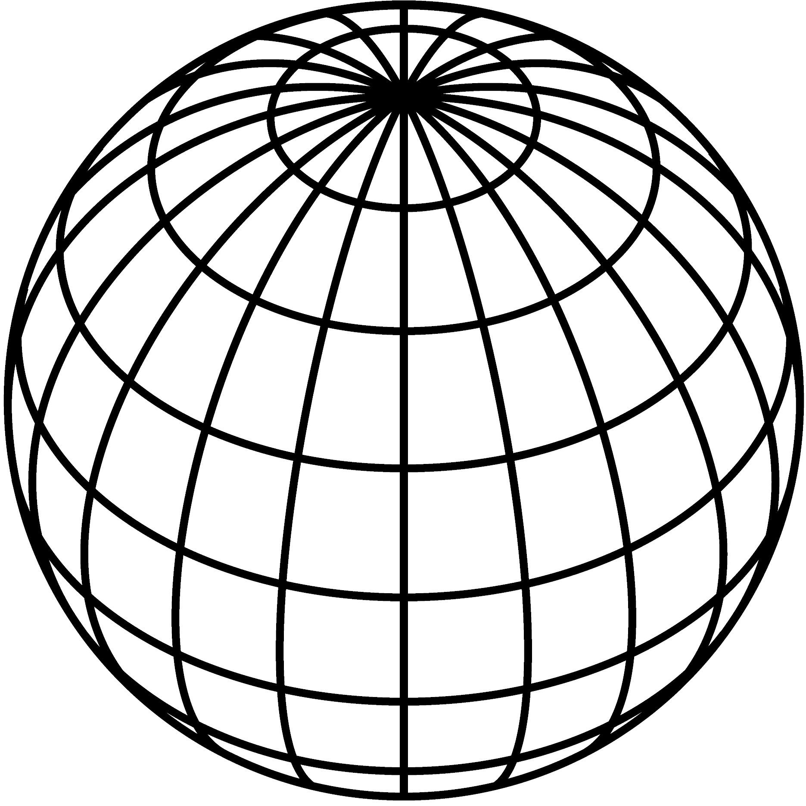

Contribute
Scans
Blue Glitter Star
Skulls
Gold star
About

UC 3D Data Atlas
Comparison of 3D scanners by object
The 3D Scanning Data Atlas is powered by the Potree Viewer and is hosted by UCLA. See the figure below for instructions on using the viewer.
Below are the OBJs produced for each of the nine objects:
Nut bolt thread gauge
Stainless steel hex head screw
Human skull model
Fuzzy Die
Silver star ornament
Blue glitter star ornament
Gold Christmas box ornament
Black & white Christmas box ornament
Frosted glass chess piece